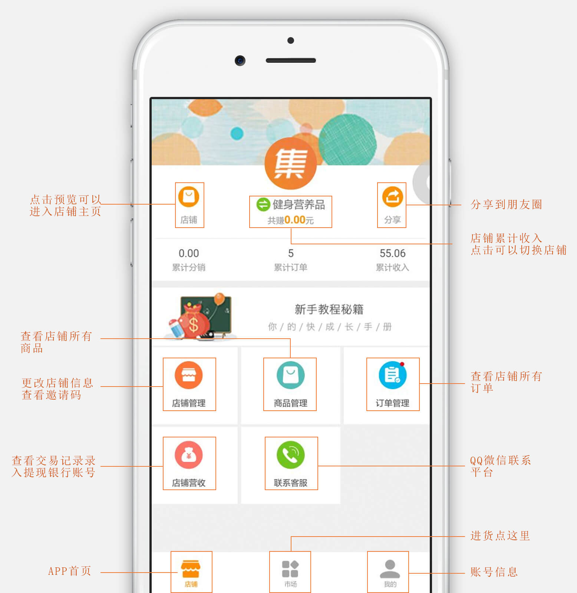

<ion-header>
  <ion-navbar hideBackButton="true">
    <ion-buttons left>
      <button ion-button clear icon-only color="black" (click)="goBack()">
        <ion-icon name="arrow-back"> </ion-icon>
      </button>
    </ion-buttons>
    <ion-title>集客多介绍</ion-title>
  </ion-navbar>
</ion-header>
<ion-content>
<div class="txt">集客多是什么？它是一个可以实现你轻松赚钱想法的APP。一键注册，无需资金货源，只需要去市场里面选货上架，就能开张。整个交易过程只管做好推广，发展分销，就慢慢坐等数钱吧，除此之外你还能自己拍照上传商品卖给别人哦。<br><br>一张图带你认识集客多</div>
<div class="img">
	
</div>
</ion-content>